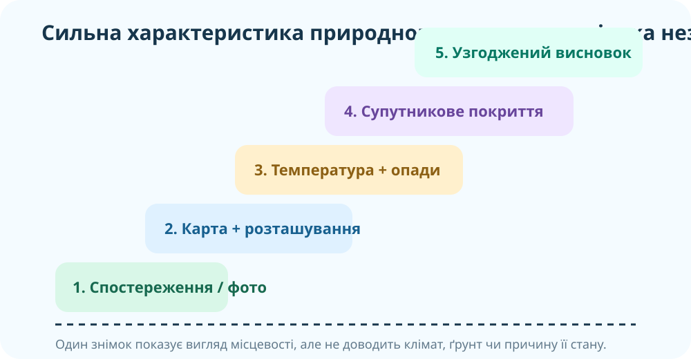
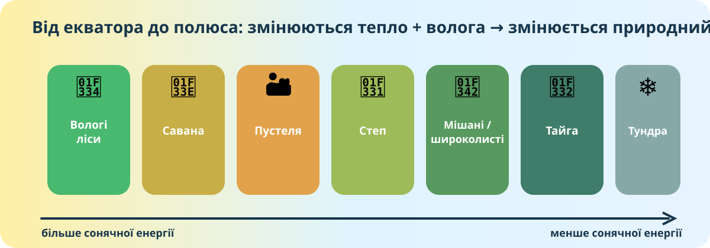

1. Фото-місія: чотири ландшафти — чотири природні комплекси
Спочатку працюємо без готових визначень. Подивіться на фото й виберіть ті характеристики, які можна безпосередньо спостерігати, а не припустити.
Що фото справді доводить?
Правило доказу
Фотографія добре показує вигляд місцевості, але кліматичні числа, тип ґрунту чи причину такого вигляду треба підтверджувати іншими джерелами.

2. Природний комплекс ≠ просто «місце»
Сортувальник
Позначте, що є природним комплексом, тобто системою взаємопов’язаних компонентів природи.
Масштаб буває різним
Малий: яр, ставок, ділянка лісу.
Середній: річкова долина, гірський масив.
Великий: природна зона, материкова система ландшафтів.
Ключ не в розмірі, а в тому, що рельєф, вода, повітря, ґрунт і живі організми взаємодіють.
Проблемне питання
Чи може один природний комплекс містити інші природні комплекси?
3. Зональність: побудуйте закономірність самі

Схема спрощує реальність: розподіл зон змінюють океанічні течії, рельєф, континентальність і висота. Але базова широтна закономірність пов’язана з розподілом тепла та вологи.
Знайдіть пару «умови → комплекс»
Сценарій: увесь рік тепло, опадів багато, сухого сезону майже немає.
Інший сценарій
Сценарій: дуже мало опадів, випаровуваність висока, рослинність розріджена.
Кліматичний симулятор
Змініть умовний рівень зволоження для теплого регіону й подивіться, як змінюється ймовірний тип рослинності. Це модель, а не універсальний прогноз.
4. Реальні карти й супутникові дані
OpenStreetMap: подивіться на локальний природний комплекс
Карта допомагає встановити розташування, форму долин, водойми, дороги й населені пункти. Але базова OSM-карта не є картою природних зон.
ESA WorldCover / Copernicus
Супутники Sentinel дають змогу картувати земний покрив: ліси, трав’янисті території, ріллю, забудову, води тощо. ESA WorldCover створено з даних Sentinel‑1 і Sentinel‑2 з роздільністю 10 м.
Відкрити WorldCoverУ 2025 році операційним наступником WorldCover став продукт Copernicus LCFM. Земний покрив не тотожний природній зоні: одна зона може містити багато класів покриву.
NASA: що показує «зелень»?
NASA Earth Observatory має глобальні карти індексу рослинності. Високе значення означає густішу/активнішу рослинність, але не називає види рослин.
Відкрити карту VegetationПастка
Чи доводить темно-зелена пляма на NDVI-карті, що це саме вологий тропічний ліс?
5. Навчальний проєкт: «Паспорт природного комплексу»
Оберіть один об’єкт: ділянка лісу, заплава, водойма, гора, печера, степова балка або інший природний комплекс. Ваше завдання — не описати «красиво», а довести, чому це саме природний комплекс.
Конструктор дослідження
Що має бути в сильному проєкті
✓ точне місце;
✓ щонайменше 4 компоненти природи;
✓ щонайменше 2 причинні зв’язки;
✓ два різні джерела доказів;
✓ висновок, у якому Ви пояснюєте систему, а не просто перелічуєте факти.
6. Коротке відео: природні зони світу
World Biomes Explained. Під час перегляду випишіть дві пари «кліматична умова → ознака рослинності».
Після відео
Чому савана й вологий тропічний ліс можуть лежати в теплому поясі, але виглядати зовсім по-різному?
7. Тепер теорія
Природний комплекс
Територіальна система, у якій рельєф, гірські породи, повітря, води, ґрунти, рослинність і тваринний світ взаємопов’язані. Зміна одного компонента може спричинити зміни інших.
Зональний природний комплекс
Великий природний комплекс, поширення якого закономірно пов’язане передусім із широтним розподілом тепла й вологи. Приклади: тундра, тайга, степ, пустелі, савани, вологі тропічні ліси.
Чому межі не ідеально рівні?
На зональність накладаються рельєф, віддаленість від океану, океанічні течії, висота над рівнем моря, властивості порід і локальна циркуляція повітря.
Джерела для поглиблення
NASA Earth Observatory — Mission: Biomes · ESA WorldCover · OpenStreetMap
8. Підсумок CER
Проблема: Учень побачив на супутниковому знімку велику зелену ділянку на 55° пн. ш. і заявив: «Це вологий тропічний ліс, бо він дуже зелений».
9. Домашнє завдання
§51 + мініпроєкт
Опрацюйте §51. Виберіть один природний комплекс своєї місцевості та складіть його «паспорт» за п’ятьма пунктами з уроку. Додайте мінімум два незалежні джерела: власне фото/спостереження + карта або супутникові дані.
Електронний підручник / ВШОФормат здачі
Постер, презентація, цифрова карта або коротка міні-розповідь. Обов’язково: місце, компоненти, два взаємозв’язки, докази, висновок.
10. Перевірка знань — 10 балів
Тест відкриється після заповнення всіх трьох полів.